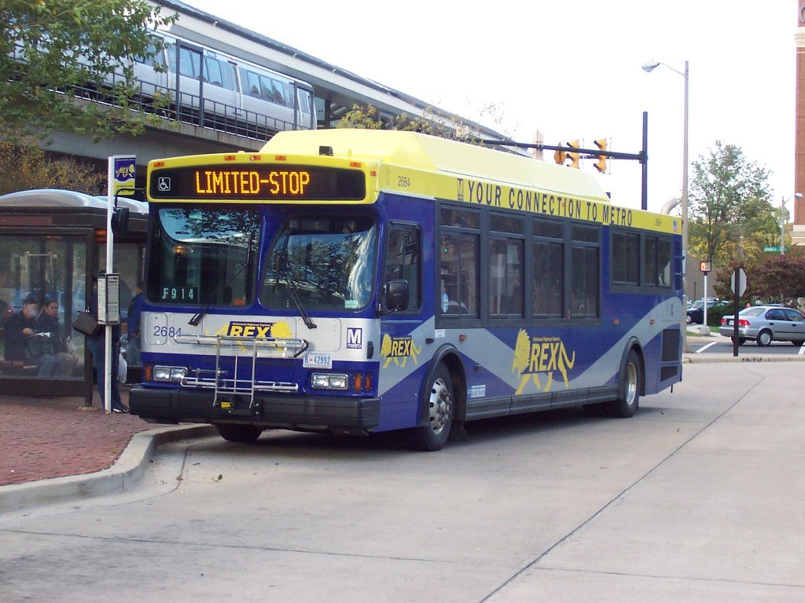
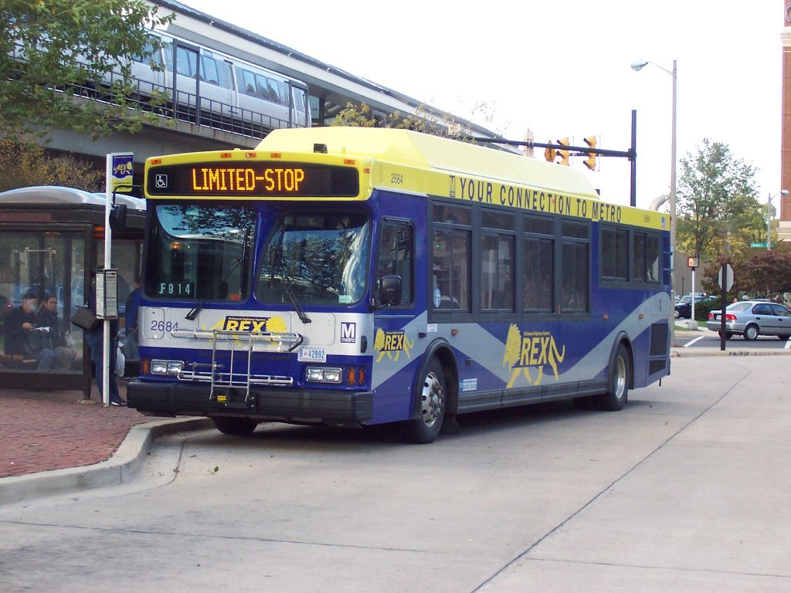
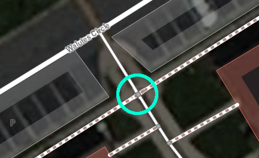
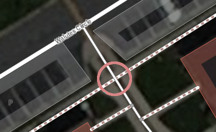

Pedestrian Routing
State of the Map 2015
Christopher Fricke | @bmoregeo
Developer @ GISi Indoors
 



OSM + Pedestrian Routing = <3
The Competition


- Footway: Designated pedestrian path or trail
- Path: Generic path or trail for bikes and walking
- Steps: Flight of Stairs
- Elevator: Elevator
- Pedestrian: Designated road or plaza for pedestrians
- *: Any other road type with *Sidewalk* Tag
Drawing


- Yes: Accessible to Anyone
- No: Not Accessible to Anyone
- Private: Private Use Only
- Permissive: Accessible to Anyone, at Owners Discretion (stores)
- Delivery: Only for delivery people
- Discouraged: Awkwardly Accessible to Anyone.)
Wheelchair Accessibility Tags
- ramp: The path is a ramp. (Yes|No)
- incline: Percent incline of path.
- smoothness: The surface smoothness of the path. (impassable->excellent)
- width: The width of the path (meter).
- wheelchair: The path is wheelchair accessible. (Yes|No)